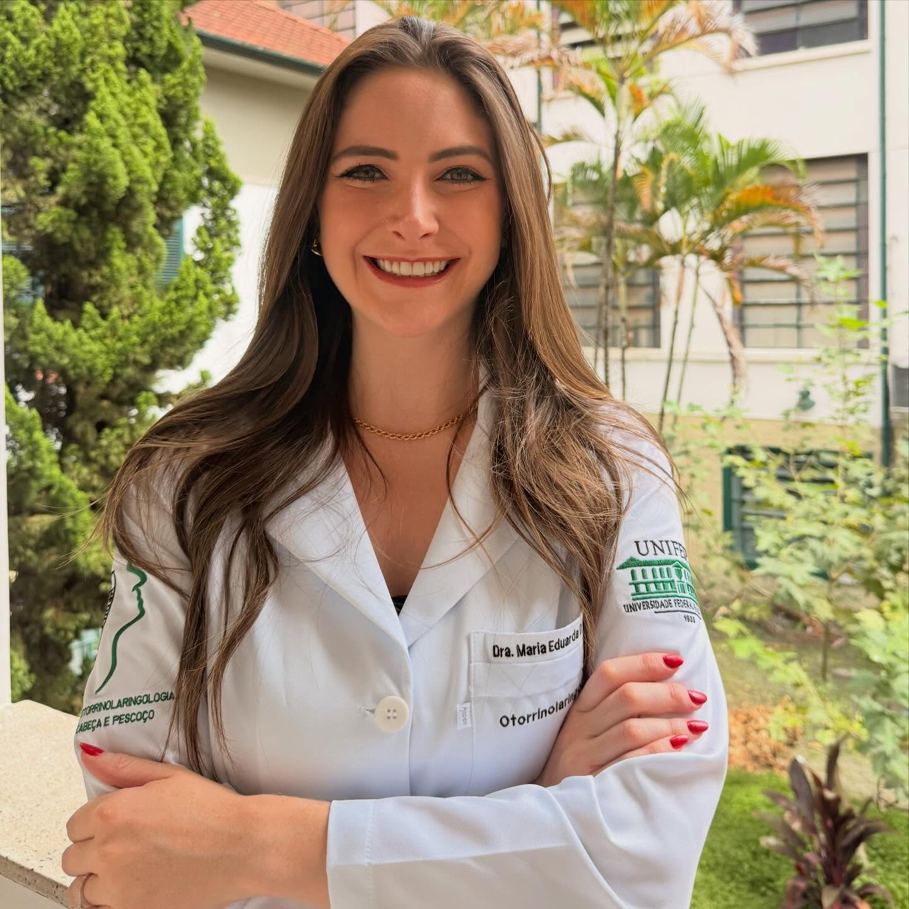
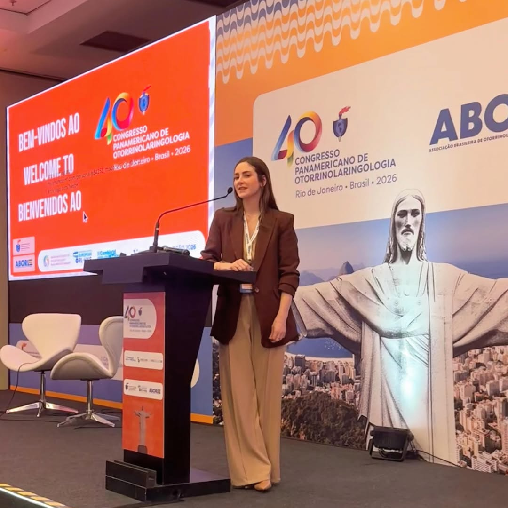

Consultas
Investigação diagnóstica, tratamento, reavaliação e avaliação de quadros agudos, com escuta e explicação clara das opções.
Rinologia & Cirurgia de Base do Crânio
Diagnóstico cuidadoso e tratamento das doenças nasais — do diagnóstico à decisão, lado a lado com você. Uma jornada de acolhimento, confiança, empatia e ciência.
Atendimento em Porto Alegre e Grande Porto Alegre

O que tratamos
Se algum desses sintomas faz parte da sua rotina, existe caminho — clínico ou cirúrgico.
Espirros, coceira, nariz entupido e coriza persistente.
Congestão, dor na face e secreção que não passam.
Obstrução nasal que atrapalha o sono e o dia a dia.
Investigação e tratamento das causas do ronco.
Diagnóstico e manejo para noites — e dias — melhores.
Avaliação e testes para perda ou alteração do olfato.
Como podemos cuidar
Investigação diagnóstica, tratamento, reavaliação e avaliação de quadros agudos, com escuta e explicação clara das opções.
Exames diagnósticos por vídeo, testes de olfato e testes alérgicos para um diagnóstico preciso.
Cirurgias minimamente invasivas, quando indicadas, com foco em recuperação e qualidade de vida.
Como trabalho
Você é ouvido do início ao fim.
Decisões tomadas em conjunto.
Cuidado próximo e humano.
Condutas com base em evidência.

Sobre a Dra.
Médica especializada em Rinologia e Cirurgia de Base do Crânio, atuando no diagnóstico e tratamento de rinite, sinusites, desvio de septo, ronco, apneia do sono e alterações do olfato.
Realiza tratamentos clínicos e cirurgias minimamente invasivas, além de exames diagnósticos por vídeo, testes de olfato e testes alérgicos — sempre com cuidado voltado à qualidade de vida e ao bem-estar respiratório.
Marcar uma consultaAgende sua consulta pelo WhatsApp. Atendimento em Porto Alegre e Grande Porto Alegre.